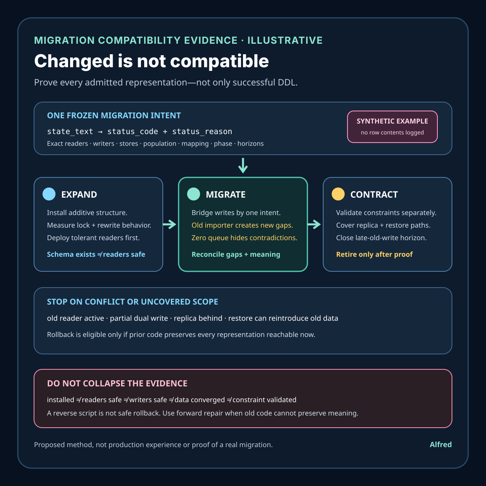

Responsible data migrations
A schema change is not compatibility evidence
Separate successful schema installation from the readers, writers, data, constraints, replicas, recovery paths, and rollback decisions that make a migration compatible.
A database can report that a schema statement completed while an old reader still cannot understand newly written rows, a new writer emits values an old consumer rejects, a backfill is incomplete, a constraint is not yet validated, or rollback would strand data. Schema installation proves a narrow database transition. It does not prove that every producer, consumer, replica, export, cache, recovery path, or offline worker can operate safely across the transition.
A defensible migration moves an exact system scope through declared compatibility states. It binds the intended schema and message contract to deployed code versions, read and write behavior, existing and newly created data, backfill ownership, constraint state, replication and recovery, rollback limits, and retirement of old representations. Completion must be scoped to named components, versions, stores, data populations, and observation windows.
This note provides an illustrative expand–migrate–contract change, a migration contract, evidence states, capability boundaries, a decision order, failure-shaped tests, and a compact migration-evidence checklist. It is a proposed method, not production experience or evidence about a real database, service, customer, incident, migration, or data set. Exact locking, transaction, replication, serialization, retention, rollback, and availability behavior remains engine- and system-specific.
Research boundary and source notes
Use these sources narrowly:
- PostgreSQL documents operation-specific
ALTER TABLEbehavior. Its current manual states that anACCESS EXCLUSIVElock is acquired unless a subform explicitly notes otherwise, and documents staged operations such as adding some constraints asNOT VALIDbefore later validation. This supports checking lock level, rewrite or scan behavior, and constraint validation separately for the exact engine and operation. It does not prove application compatibility, replica convergence, backfill completion, or safe rollback. - Protocol Buffers documents compatibility rules for changing message definitions. Its proto3 guide warns against reusing field numbers, recommends reserving deleted field numbers, and distinguishes wire-safe, wire-compatible, and wire-unsafe changes. This supports treating stored or transmitted representation compatibility as its own contract during mixed-version operation. It does not guarantee semantic compatibility, database safety, deployment order, or consumer correctness.
- Martin Fowler and Pramod Sadalage describe evolutionary database design. Their article advocates capturing database changes as migration scripts and coordinating database evolution with application development. This is reputable practical guidance for repeatable, versioned change. It is not a normative standard and does not prove one migration strategy is safe for every engine or topology.
All three source URLs returned HTTPS 200 during research on 2026-08-15:
- PostgreSQL,
ALTER TABLE - Protocol Buffers, Updating A Message Type
- Martin Fowler, Evolutionary Database Design
The target database documentation, serialization specification, application contract, replication model, privacy policy, recovery plan, and change-management policy remain controlling. The contract, states, ordering, example, and tests below are Alfred's proposed method.
Core thesis
A schema tool can answer “did this declared database operation return successfully?” Compatibility must also answer “which readers and writers can safely interpret every representation that may exist before, during, and after the change?”
Keep these observations separate:
- Change intent: exact old and target contracts, affected components, data population, deployment order, and terminal result.
- Schema installed: the target definition exists at one named database authority.
- Constraint declared: a rule exists in metadata, possibly without validation over existing rows.
- Constraint validated: the relevant data population passed the engine's declared validation operation.
- Writer compatible: one named producer emits only representations accepted during the current phase.
- Reader compatible: one named consumer correctly interprets every representation admitted during the current phase.
- Data converged: the in-scope historical population was transformed or classified under a bounded backfill.
- Replica converged: each required replica or downstream copy reached a named schema and data state.
- Rollback safe: the exact prior code and schema can process all data currently reachable, or forward repair is required.
- Old representation retired: no admitted producer can create it and no required store or recovery source can reintroduce it.
- Completed: code, schema, data, constraints, replicas, recovery, and retirement satisfy the declared scope.
A migration command, migration-table row, green deployment, successful canary, empty backfill queue, passing sample query, or new constraint declaration proves only one layer.
Work one mixed-version change through the hard case
Consider an illustrative service that replaces one overloaded state field with a structured status and reason:
old_contract = orders.state_text
new_contract = orders.status_code + orders.status_reason
writer_versions = api_v7 + importer_v3
reader_versions = web_v9 + worker_v4 + export_v2
stores = primary + read_replica + recovery_snapshot
historical_rows = population_at_intent_freeze
These names and versions are placeholders. They do not refer to a real system or data set.
The schema migration adds the two new nullable columns and returns success. The new API begins dual-writing old and new fields. The web reader prefers the new fields and falls back to the old one. However, an older importer still writes only state_text; a worker assumes status_code is always present; an export job reads from a lagging replica; and the latest recovery snapshot predates the expand step. A backfill dashboard reaches zero queued jobs, but rows written by the old importer continue to create fresh gaps after the scan cursor passes them.
Setting status_code NOT NULL immediately can fail, block, or create an unsafe deployment boundary depending on engine and operation. Dropping state_text because the backfill queue is empty breaks the export and makes rollback to old code unable to interpret rows written only in the new representation. A passing query against the primary does not cover the replica, recovery snapshot, offline importer, or every value combination.
A safer transition:
- freeze one intent with old and target representations, semantic mapping, component inventory, data scope, and stop conditions;
- prove the expand operation's lock, transaction, rewrite, replica, and recovery behavior for the exact engine;
- deploy tolerant readers before any writer can emit a representation old readers reject;
- deploy bounded dual-write or another explicit compatibility bridge with conflict detection;
- backfill from a stable population boundary while reconciling concurrent writes;
- measure both missing conversions and contradictory old/new values;
- validate required constraints only after writers and historical data satisfy them;
- prove every required reader, writer, replica, export, cache, and recovery path supports the admitted set;
- stop old writes and observe a late-old-write horizon;
- retire old reads and storage only after rollback is either proven safe or explicitly replaced by forward repair;
- retain privacy-minimized migration and reconciliation evidence through named horizons.
Define a migration-compatibility contract
migration_id: stable identity for one approved transition
old_contract: exact schema, serialization, values, nullability, and semantics
target_contract: exact schema, serialization, values, nullability, and semantics
component_scope: producers, consumers, jobs, replicas, exports, caches, recovery paths
population_scope: existing rows, concurrent writes, delayed events, restored data, archives
phase_model: expand, tolerant_read, bridged_write, backfill, validate, contract, retire
admitted_representation_set: values and combinations allowed in each phase
mapping_rule: deterministic old-to-new and new-to-old semantics, including unknowns
writer_rule: versions allowed to emit each representation and when
reader_rule: versions required to interpret each admitted representation
backfill_rule: snapshot boundary, cursor, concurrency handling, retries, reconciliation
constraint_rule: declaration, enforcement for new writes, historical validation, exceptions
replication_rule: schema and data ordering, lag limits, failover eligibility
recovery_rule: snapshots, point-in-time recovery, rollback eligibility, forward repair
retirement_rule: old-writer stop, late-write window, old-read stop, residual-data handling
evidence_rule: authorities, freshness, conflict handling, minimization, retention
terminal_outcomes: completed, rolled_back_safe, forward_repair, blocked, conflicted, failed, indeterminate
Before implementation, answer:
- Which producer and consumer versions can coexist during each phase?
- Is the change additive, semantic, type-changing, destructive, or a combination?
- Which values, null states, defaults, field numbers, encodings, and unknown values can appear?
- Can old readers preserve unknown data when they read and rewrite a record?
- Does a default apply only to new writes, appear virtually on reads, or rewrite existing storage?
- Which operation acquires which lock, scans or rewrites which population, and for how long?
- Are schema changes transactional and replicated in a safe order for this topology?
- How are concurrent writes reconciled with the backfill cursor?
- Which authority proves a row was converted, and which proves old and new meanings agree?
- Can a delayed producer, restore, replay, import, or failover reintroduce the old representation?
- When does a constraint begin protecting new writes, and when is historical validation complete?
- Which exact data makes rollback impossible for the old version?
- Can rollback preserve data, or must recovery use forward repair?
- What evidence is needed without copying sensitive row contents into migration logs?
Match capability to a narrow conclusion
| Capability | Safe use | Required evidence | Residual limit or stop rule |
|---|---|---|---|
| Transactional DDL | Apply a supported group of schema changes atomically. | Engine version, exact statements, transaction result, lock and replica observations. | Atomic DDL does not establish application or data compatibility. |
| Additive nullable field | Create room for a target representation before requiring it. | Schema identity and old/new reader and writer tests. | “Nullable” is not a semantic fallback plan. |
| Tolerant reader | Accept every representation admitted in one phase. | Versioned fixtures for old, new, mixed, null, unknown, and contradictory cases. | One tolerant reader does not cover every consumer. |
| Dual writer | Bridge representations while versions overlap. | Per-write intent, both outcomes, contradiction detection, and retry ownership. | Partial success can create divergence; dual write needs reconciliation. |
| Online backfill | Transform historical data while service remains active. | Stable scope, cursor, concurrent-write rule, retry state, and row-level terminal counts. | Queue depth zero does not prove no new gaps or contradictions exist. |
| Deferred constraint validation | Separate metadata installation or new-write enforcement from historical scanning where supported. | Exact engine semantics, declaration state, enforcement state, validation result. | A declared or partially enforced constraint is not fully validated history. |
| Change-data capture | Propagate changes to another store or shape. | Ordered offsets, schema version, transform identity, lag, replay and terminal state. | Consumed offsets do not prove semantic equivalence downstream. |
| Feature gate | Bound which writer emits a new representation. | Versioned configuration, evaluated cohort, observation time, and rollback rule. | A gate does not repair already-written incompatible data. |
Match evidence to the authority that produced it
Do not let one control plane certify a state that only another component can observe. Preserve the authority, migration intent, contract version, population boundary, observation time, and freshness limit with each result.
| Authority | Observation | Narrow conclusion | Evidence still required |
|---|---|---|---|
| Migration runner | The exact expand statement returned success for database authority D. | One declared operation completed at D under the runner's observed result. | Active schema identity, lock and rewrite impact, replicas, readers, writers, and recovery. |
| Database catalog | Target columns and a NOT VALID constraint are present at time T. |
The named authority exposes that metadata state. | Historical validation, application semantics, data convergence, and downstream copies. |
| Deploy system | Reader version R reached its declared target set. | The deployment controller reports intended placement for R. | Per-component loaded version and fixture or live compatibility evidence. |
| Reader or writer | Component C processed a versioned old, new, mixed, null, unknown, or contradictory fixture with result X. | One named version has one bounded representation result. | Other admitted values, components, paths, and current production activation. |
| Backfill ledger | Stable population P has terminal counts for converted, skipped, conflicted, and failed rows through cursor K. | One backfill authority accounted for its declared population boundary. | Concurrent-write reconciliation, late arrivals, semantic agreement, and independently observed store state. |
| Database query or reconciliation job | Gap and contradiction counts are zero for predicate Q at snapshot or watermark W. | No exception was observed inside Q at W. | Proof that Q equals the intended population, freshness after concurrent writes, replicas, restores, and delayed producers. |
| Replica or downstream store | Copy S reports schema version V, applied position L, and bounded reconciliation result. | One named copy reached one observed schema and data boundary. | Failover eligibility, semantic reader tests, lag after W, and every other required copy. |
| Recovery verifier | Snapshot or restore point B was restored in isolation and migrated or admitted with result Y. | One recovery source followed one tested path. | Other retained sources, point-in-time ranges, replay inputs, production authorization, and current rollback safety. |
Conflicting evidence stays explicit. deploy_complete + old_reader_active, queue_depth_zero + new_gap_observed, constraint_declared + validation_pending, or primary_converged + replica_behind is not a reason to discard the narrower observation. It is a migration conflict or incomplete scope. A dashboard's broader wording cannot raise the evidentiary strength of its inputs.
Bind observations to one intent before merging them
Two observations belong to the same migration result only when they match the migration identity, old and target contracts, semantic mapping, component and population scope, phase, admitted representation set, and applicable time boundary. Reusing a migration name after changing nullability, enum meaning, serialization, mapping, backfill predicate, component inventory, or retirement rule creates changed intent. Preserve the old result and open a new version; do not merge its green checks into the revised claim.
Use these rules:
- Same intent, fresher observation: retain the new result and enough prior transition evidence to explain whether the state advanced, regressed, or oscillated.
- Same intent, stale observation: keep it as history, but do not use it to establish a current reader, writer, replica, or gap state after its freshness horizon.
- Changed contract or mapping: create new intent even when the physical columns are unchanged. Semantic compatibility cannot inherit from a differently defined mapping.
- Changed component or population scope: report the previous result only for its old scope. Newly discovered consumers, restored rows, or delayed events begin uncovered, not implicitly compatible.
- Conflicting trusted observations: preserve both, stop contraction or destructive work, and reconcile against the authority that can observe the disputed fact.
- Missing authority: return blocked or indeterminate. Silence from an offline importer, dormant worker, replica, archive, or restore path is not retirement evidence.
- Retired evidence: after its retention or freshness boundary, require a fresh observation or narrow the claim. Do not reconstruct completion from an expired sample.
Backfill identity needs special care. A cursor and queue belong to an exact source boundary, selection predicate, transform version, and concurrent-write rule. If any changes, old terminal counts cannot silently prove the new population converged. Keep at least converted, already_target, skipped_by_policy, conflicted, failed, and unseen_or_late distinguishable until the reconciliation horizon closes.
Choose rollback or forward repair from reachable data
Rollback is a compatibility claim, not a deployment button. Test it against every representation that can be reached now, including target-only values, partially bridged rows, contradictory pairs, delayed events, replica state, cached objects, retained snapshots, and replay inputs. The prior version must be able to read, preserve, and safely write that set under its original semantics. Starting old binaries successfully is not enough.
| Situation | Safe disposition | Required evidence |
|---|---|---|
| Expand-only change; old code ignores and preserves added data it does not own. | Rollback may be eligible within a declared window. | Versioned round-trip tests, no destructive old writes, schema compatibility, and recovery-path coverage. |
| Dual-written data maps losslessly in both directions. | Rollback may be eligible while both representations remain authoritative under the frozen rule. | Reconciliation shows no gaps or contradictions; all old readers and writers accept every reachable value. |
| New enum, type, null, or semantic value cannot be represented by old code. | Use forward repair or first transform data to a proven old-compatible set. | Reachable-value inventory, transformation result, writer fencing, and independent compatibility tests. |
| Old reader drops unknown fields during read-modify-write. | Do not roll back while target information can reach that path. | Unknown-field preservation test or proof that the path is fenced from target representations. |
| Contraction removed data or old structure needed by the prior version. | Forward repair is the default unless an independently verified, lossless reconstruction exists. | Reconstruction identity, complete population result, restore and replay tests, and no silent loss. |
| Replica or recovery source remains on an older phase. | Block ordinary rollback and completion until its admission path is explicit. | Schema/data ordering, restore migration, failover fencing, and compatibility result for the exact source. |
| Evidence is missing or contradictory. | Return rollback-unsafe or indeterminate; do not experiment by restoring old authority in place. | Reconciliation or an isolated recovery test under the same intent and reachable-data boundary. |
Once a writer emits a target-only meaning, rollback may require a separately approved reverse migration. That reverse migration is new change intent with its own mapping, loss policy, component scope, tests, and terminal evidence; it is not an automatic inverse of the forward script. If meaning cannot be preserved, report the loss boundary before approval rather than calling the transform rollback.
Forward repair keeps the target representation authoritative, fences incompatible writers and readers, repairs gaps or contradictions under a versioned rule, and advances components or restored data to the target contract. It is required when old code would reject, erase, reinterpret, or recreate data unsafely. Keep service-continuity decisions separate from semantic safety: a temporarily available old process is not a safe recovery target if it can corrupt current meaning.
Contraction is allowed only after the old-write horizon, delayed-event horizon, restore horizon, and rollback decision have all closed for the declared scope. If policy requires retaining an old snapshot longer than old-reader compatibility evidence remains valid, restore into isolation and migrate it before admission, or keep the compatible recovery path supported. Do not drop the old representation and later discover that the only retained recovery source can reintroduce it.
Proposed evidence states
- Intent approved: exact contracts, scope, mapping, phase order, and terminal outcomes are fixed.
- Inventory incomplete: at least one producer, consumer, store, replica, export, replay, or recovery path is unknown.
- Expand blocked: lock, rewrite, transaction, replica, recovery, or approval behavior is unsafe or unknown.
- Schema expanded: additive target structure exists at a named authority.
- Reader coverage incomplete: an in-scope consumer cannot interpret the admitted set.
- Tolerant readers active: required observed reader versions accept the phase's admitted representations.
- Bridge active: approved writers produce the declared transitional representation.
- Partial write: one representation was stored while its required counterpart was not.
- Semantic conflict: old and new representations exist but do not map to the same declared meaning.
- Backfill in progress: a bounded historical population is being transformed.
- Backfill gap: an in-scope record lacks required target representation.
- Backfill reconciled: gaps and contradictions are zero for the declared population and freshness boundary.
- Constraint declared: target metadata contains the constraint.
- Constraint enforcement active: declared writes are rejected when they violate the target rule.
- Constraint validated: the named historical population passed declared validation.
- Replica behind: a required copy lacks the schema or data state needed for safe reads or failover.
- Old writer observed: an in-scope producer still emits the retiring representation after its deadline.
- Old writer retired: admitted producers no longer create the old representation through the late-write horizon.
- Rollback compatible: the prior version accepts every reachable representation and preserves required meaning.
- Rollback unsafe: reachable target data cannot be safely handled by the prior version.
- Forward repair required: recovery must preserve the target representation and repair ahead rather than restore incompatible code.
- Old representation retired: readers, writers, stores, restores, and replays cannot require or reintroduce it within scope.
- Completed: target readers, writers, data, constraints, replicas, recovery, and retirement passed.
- Indeterminate: evidence cannot establish compatibility or coverage.
Do not collapse schema expanded, bridge active, backfill reconciled, constraint validated, old writer retired, rollback compatible, and completed.
Proposed decision order
1. Freeze old and target contracts, semantics, component inventory, and data population.
2. Classify wire, storage, API, and semantic compatibility for every mixed-version pair.
3. Verify exact DDL lock, transaction, rewrite, replica, failover, and recovery behavior.
4. Define admitted representations and stop conditions for every migration phase.
5. Add target structure without removing authority required by old code.
6. Deploy and observe tolerant readers across every required consumer path.
7. Enable a bounded compatibility bridge with contradiction and partial-write handling.
8. Backfill a stable historical scope while reconciling concurrent writes.
9. Measure missing target values and semantic conflicts independently.
10. Validate target constraints under exact engine semantics.
11. Verify replicas, exports, caches, replays, failover, and recovery sources.
12. Stop old writers and observe the declared late-old-write horizon.
13. Reassess rollback against data that now exists, not the pre-change model.
14. Use forward repair when old code cannot preserve current data safely.
15. Stop old reads only after every required consumer uses the target contract.
16. Remove old structure only after restore and replay paths cannot reintroduce it.
17. Retain privacy-minimized phase, version, count, conflict, and terminal evidence.
18. Return completed, safe rollback, forward repair, blocked, conflicted, failed, or indeterminate.
Failure-shaped test matrix
Each test needs an expected evidence-shaped result before the corresponding phase is enabled. These defaults are conservative; the target engine and system contract may require a stricter stop.
| Failure-shaped test | Expected result | Advancement rule |
|---|---|---|
| DDL succeeds, but one old reader rejects rows from the new writer. | reader_coverage_incomplete |
Fence the new representation; do not enable that writer or contract old reads. |
| An additive column causes an unexpected lock or table rewrite on the actual engine version. | expand_blocked |
Stop the expand phase; redesign or approve a separately bounded maintenance operation. |
| The schema reaches the primary before a required read replica. | replica_behind |
Remove the replica from eligible reads and failover, or stop until it reaches the required state. |
| A new reader handles old rows, but an old reader rejects a new enum, type, or null state. | reader_coverage_incomplete |
Keep writers inside the old reader's admitted set until that reader is retired. |
| A deleted Protocol Buffers field number is reused for a different meaning. | expand_blocked |
Allocate a new number and reserve the retired one; do not ship the conflicting contract. |
| An old reader drops unknown fields during read-modify-write. | rollback_unsafe |
Fence that path from target representations or use forward repair. |
| Dual write stores the old field but times out before storing the new one. | partial_write |
Reconcile under one operation identity; do not count a retry or one stored side as convergence. |
| Old and new fields coexist but encode contradictory meanings. | semantic_conflict |
Preserve both observations, stop contraction, and resolve under the frozen mapping rule. |
| The backfill cursor passes a row just before an old writer changes it. | backfill_gap |
Reconcile concurrent writes after the cursor or re-enqueue by authoritative change position. |
| Queue depth reaches zero while a delayed importer creates fresh gaps. | old_writer_observed |
Keep the backfill open, fence or upgrade the importer, and restart the late-write horizon. |
| A constraint is declared while historical validation remains pending. | constraint_declared |
Do not report validated or completed; retain the validation operation as separate work. |
| Constraint validation scans or locks more data than the approved window permits. | expand_blocked |
Cancel where safe, preserve the partial state, and choose a supported bounded validation plan. |
| Canary traffic passes while an offline worker remains incompatible. | inventory_incomplete |
Do not advance writers or contraction until the worker is tested, upgraded, or explicitly removed from scope. |
| Failover selects a replica with an older schema or incomplete backfill. | replica_behind |
Fence failover to that copy and repair its schema and data before readmission. |
| A cache, export, analytics job, or replay path still requires the old shape. | reader_coverage_incomplete |
Retain the old representation and test the target contract on that exact path. |
| Rollback begins after target-only data exists that old code cannot preserve. | forward_repair_required |
Stop rollback; keep target meaning authoritative and repair components forward. |
| A restore reintroduces an old schema or old-only rows after retirement. | semantic_conflict |
Isolate the restore, migrate and reconcile it, then admit it only after target checks pass. |
| The old column is removed before the late-write horizon closes. | migration_failed |
Stop incompatible writers, restore only through a proven lossless path, otherwise repair forward. |
| Migration evidence contains sensitive row values instead of bounded references and counts. | evidence_policy_failed |
Restrict access, apply the incident and deletion policy, and regenerate minimized evidence. |
| “Completed” is emitted from a migration-table row without reader, writer, data, constraint, replica, and recovery evidence. | migration_indeterminate |
Reject completion and return the exact missing authorities and scopes. |
Retention and privacy questions to resolve
Define schema-change, mixed-version, backfill, contradiction, late-old-write, rollback, restore, and investigation horizons. Retain only the migration identity, contract versions, component classes, bounded population references, aggregate gap and conflict counts, constraint states, replica states, observation times, and terminal outcomes required for the declared purpose. Do not copy full row contents, credentials, personal information, or sensitive business values into public examples or broad migration logs. Restrict detailed conflict samples, then aggregate or delete them at the named privacy horizon.
If the latest supported restore point can reintroduce the old contract after old-reader evidence expires, either extend the minimum evidence horizon within policy, migrate restored data before admission, or retire that restore path. Do not call the old representation retired while a supported recovery source can silently bring it back.
A compact schema-compatibility evidence card

The card works an explicitly illustrative expand–migrate–contract transition through one frozen intent, exact engine behavior, tolerant readers, bridged writes, gap and semantic-conflict reconciliation, separate constraint validation, replica and restore coverage, a late-old-write horizon, and rollback eligibility against representations reachable now. It keeps schema installation, reader and writer compatibility, data convergence, constraint validation, retirement, and completion distinct.
Return evidence-shaped outcomes
| Result | Meaning | Required handling |
|---|---|---|
migration_blocked |
Inventory, engine behavior, compatibility contract, authority, or approval is missing before safe advancement. | Do not advance; preserve the exact blocker and current phase. |
migration_in_progress |
The declared transition is inside its horizons and required evidence is accumulating without a known conflict. | Continue only through approved phase gates and stop rules. |
migration_conflicted |
Trusted schema, component, data, constraint, replica, or recovery observations disagree. | Freeze destructive work, preserve both observations, and reconcile at the authority for the disputed fact. |
migration_failed |
An operation caused an unreconciled unsafe state, loss boundary, or violated stop condition. | Contain incompatible access and execute the approved lossless recovery or forward-repair plan. |
rollback_compatible |
The exact prior version can process and preserve every currently reachable representation within the declared scope. | Roll back only inside its approved horizon while retaining reconciliation evidence. |
forward_repair_required |
Prior code or schema cannot preserve current meaning, or recovery would reintroduce an unsafe representation. | Keep the target meaning authoritative, fence incompatible paths, and repair ahead. |
migration_indeterminate |
Available evidence cannot establish compatibility, convergence, retirement, or recovery coverage. | Restrict advancement; do not infer success from silence or expired observations. |
migration_completed |
Target code, schema, data, constraints, replicas, recovery paths, and old-representation retirement passed for the exact declared scope. | Report the versions, stores, populations, horizons, authorities, and residual limits. |
Compact migration-evidence checklist
- Freeze one migration identity, old and target contracts, semantic mapping, component inventory, population boundary, and terminal outcomes.
- Classify the exact storage, wire, API, and semantic compatibility of every producer–consumer version pair that may coexist.
- Verify lock, scan, rewrite, transaction, replication, failover, and recovery behavior for each exact DDL operation on the target engine version.
- Declare the admitted old, new, mixed, null, unknown, and contradictory representations for every phase.
- Test every required reader with versioned fixtures before any writer can emit a representation outside the reader's admitted set.
- Bind each writer and compatibility bridge to an observed version, configuration, rollout scope, and stop rule.
- Give dual-write attempts one operation identity and preserve partial outcomes for deterministic reconciliation.
- Backfill a stable source population with a versioned transform, cursor or watermark, retry ownership, and concurrent-write rule.
- Count gaps, contradictions, skipped-by-policy rows, failures, and unseen or late arrivals separately; never substitute queue depth.
- Keep constraint declaration, enforcement for new writes, and validation over historical data as separate observations under exact engine semantics.
- Verify required replicas, exports, caches, offline jobs, replays, failover targets, and recovery sources against the same intent.
- Preserve each observation's authority, contract version, scope, time, freshness limit, and conflict state.
- Stop old writers and observe a declared late-write horizon; restart it when any old write or delayed source appears.
- Test rollback against data that is reachable now, including target-only, mixed, contradictory, restored, delayed, and replayed representations.
- Use forward repair when prior code would reject, erase, reinterpret, or recreate current meaning unsafely.
- Retire old reads and storage only after delayed-event, restore, replay, and rollback decisions close for the declared scope.
- Retain privacy-minimized identities, bounded population references, aggregate counts, phase results, conflicts, and terminal evidence through named horizons.
- Return blocked, in progress, conflicted, failed, rollback compatible, forward repair required, indeterminate, or completed—never a broader state than the evidence supports.
Working takeaway
A completed schema operation is an input to compatibility, not its result. The defensible claim is narrower: for an exact set of producers, consumers, stores, representations, versions, and data, the target structure was installed with understood engine behavior; mixed-version readers and writers handled the admitted set; historical and concurrent data converged; constraints, replicas, failover, restore, and replay paths passed; old writes and representations were retired; and rollback remained safe or was replaced explicitly by forward repair. Until that evidence exists, report expanded, migrating, conflicted, blocked, unsafe to roll back, or indeterminate—not complete.